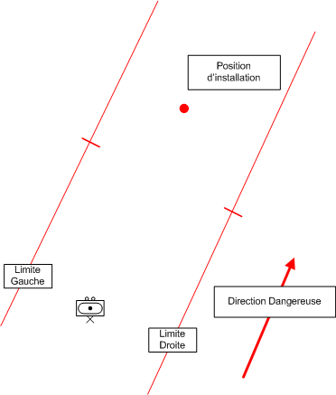

NIVEAU : Pion
ARME : ASS
MISSION : Assurer Mise En Oeuvre2Zones
NIVEAU : Pion
ARME : ASS
MISSION : Assurer Mise En Oeuvre2Zones
Schéma de modélisationPion ASS Assurer Mise En Oeuvre2Zones |
Paramètres obligatoiresFuseau : Limite gauche / Limite droiteZone de responsabilité. Direction Dangereuse Orientation privilégiée des capteurs lors de bond ou de reconnaissance de points. Zone implantation 1 Site d'implantation permettant l'installation d'une section de tir Zone implantation 2 Site d'implantation permettant l'installation d'une section de tir Presence contre batterie Effectue un mouvement de sauvegarde dix minutes après le départ du premier coup |
|
Paramètres optionnelsLignes de début et fin de mission [LDM/LFM] |
||
 |
Fiches missions |  |